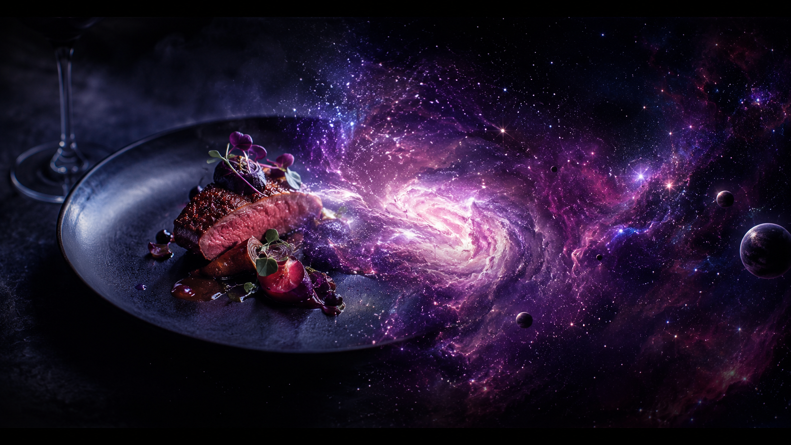

Discover Melbourne's Most Atmospheric Dining
Browse curated restaurants, get a personalised recommendation, and reserve your table in minutes.
Quick Navigation
Explore the platform or jump straight to what you need.
About Dark Matter Dining
Dark Matter Dining is a restaurant discovery and reservation platform built around immersive dining experiences in Melbourne. The service is designed for families, couples, professionals, tourists, and groups who want a memorable meal without spending hours comparing venues.
We provide restaurant discovery, personalised recommendations using a rule-based matching system, and a straightforward reservation process with a deposit option. Browse our six curated restaurants, answer three quick questions to receive a tailored recommendation, and book your table directly online.
Our focus is on convenience, variety, accessibility, and transparent, upfront reservation information - no hidden fees, no surprises.